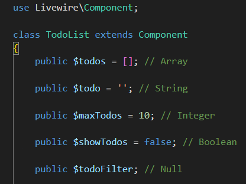
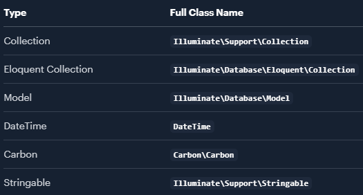
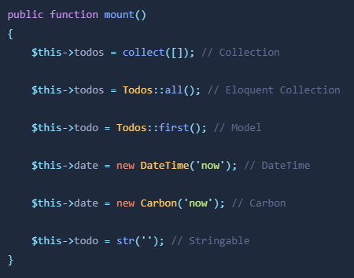
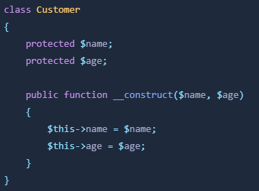
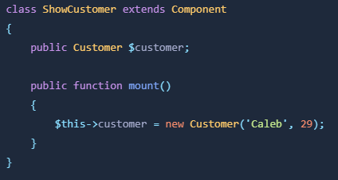
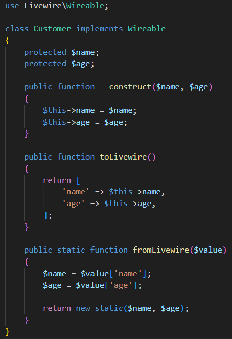

Livewire admite un conjunto limitado de tipos de propiedades debido a su enfoque único para administrar datos de componentes entre solicitudes del servidor.
Cada propiedad de un componente Livewire se serializa o "deshidrata" en JSON entre solicitudes y luego se "hidrata" de JSON nuevamente a PHP para la siguiente solicitud.
Este proceso de conversión bidireccional tiene ciertas limitaciones, lo que restringe los tipos de propiedades con las que Livewire puede trabajar.
Livewire admite tipos primitivos como cadenas, números enteros, etc. Estos tipos se pueden convertir fácilmente hacia y desde JSON, lo que los hace ideales para usar como propiedades en componentes Livewire.
Livewire soporta los siguientes tipos primitivos en las propiedades: Array, String, Integer, Float, Boolean, y Null.
Además de los tipos primitivos, Livewire admite tipos de objetos PHP comunes utilizados en aplicaciones Laravel. Sin embargo, es importante tener en cuenta que estos tipos se deshidratarán en JSON y se volverán a hidratar en PHP en cada solicitud. Esto significa que es posible que la propiedad no conserve valores en tiempo de ejecución, como los cierres. Además, la información sobre el objeto, como los nombres de las clases, puede estar expuesta a JavaScript.
Tipos PHP soportados:
Al almacenar colecciones y modelos de Eloquent en propiedades de Livewire, las restricciones de consulta adicionales como select(...) no se volverán a aplicar en solicitudes posteriores.
Visita la sección Restricciones Eloquent que no son preservadas entre solicitudes para más detalles.
A continuación se muestra un ejemplo rápido de cómo configurar propiedades de estos distintos tipos PHP:
Livewire permite que su aplicación admita tipos personalizados a través de dos poderosos mecanismos:
Los Wireables son simples y fáciles de usar para la mayoría de las aplicaciones, por lo que los exploraremos a continuación. Si es un usuario avanzado o un autor de paquetes que desea más flexibilidad, los sintetizadores son el camino a seguir.
Los Wireables son cualquier clase en su aplicación que implemente la interfaz Wireable.
Por ejemplo, imaginemos que tiene un objeto Customer en su aplicación que contiene los datos primarios sobre un cliente:
Si intenta establecer una instancia de esta clase en una propiedad del componente Livewire, se generará un error que le indicará que el tipo de propiedad Customer no es compatible:
Sin embargo, puedes resolver esto implementando la interfaz Wireable y agregando los métodos toLivewire() y fromLivewire() a tu clase. Estos métodos le indican a Livewire cómo convertir propiedades de este tipo en JSON y viceversa:
Ahora puede configurar libremente objetos Customer en sus componentes Livewire y Livewire sabrá cómo convertir estos objetos a JSON y nuevamente a PHP.
Como se mencionó anteriormente, si desea admitir tipos de manera más global y poderosa, Livewire ofrece sintetizadores, su mecanismo interno avanzado para manejar diferentes tipos de propiedades.